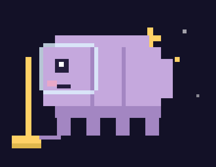
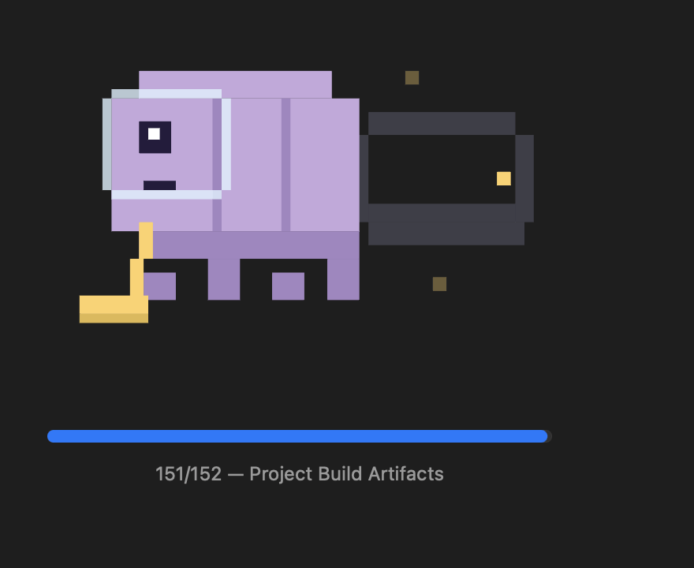

cleanup targets
Xcode DerivedData and device support, simulator runtimes, npm/pnpm/bun, Docker, Gradle, JetBrains — and your projects' node_modules, venvs, and Rust target dirs.

Reclaim the space your dev tools left behind.
The free Mac cleaner for developers — starring a space tardigrade who has survived worse than your full disk.
macOS 26+ · 1.8 MB · free to use
Released . Download, unzip, and move Cosmo.app to Applications.

Xcode DerivedData and device support, simulator runtimes, npm/pnpm/bun, Docker, Gradle, JetBrains — and your projects' node_modules, venvs, and Rust target dirs.
Including the ones other cleaners miss: Claude Code, Cursor, Codex sessions, Ollama and LM Studio models, Hugging Face caches, Playwright browsers.
A native SwiftUI app with a storage map, plus a scriptable CLI for scanning and cleanup. The download above contains the Mac app.
Reopen saved results, see when folders change, and refresh one target, a category, or the whole scan. Cancel a scan whenever you need to.
Search by project, simulator, size, or activity evidence. Protect individual items or entire projects, and review growth since your last scan.
Review each item's removal method before confirming. Track progress, revisit cleanup history, and retry items that could not be removed.
Files move to Trash unless you choose permanent deletion. Simulator devices and runtimes are removed permanently through Apple's simulator tools; the review identifies them separately.
Every target explains what it is and what removal means. Destructive targets hold real data, such as archives, models, or session history, and are excluded from safe-only cleanup.
Cosmo rechecks selected items before cleanup, skips targets while their tools are running, and refuses file paths outside your home. Version-aware selection helps retain recent simulator runtimes and tool versions.